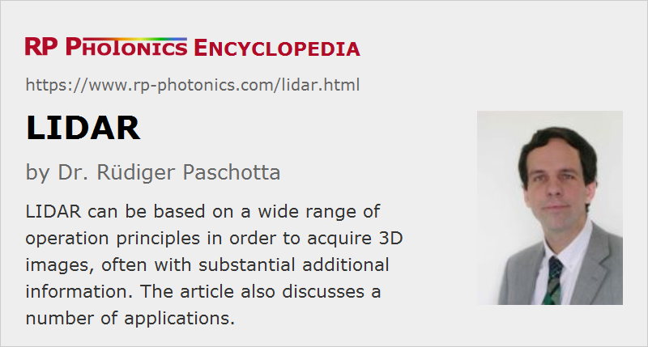

LIDAR
Acronym: LIDAR = light detection and ranging
Definition: a technique for acquiring 3D images with laser pulses
Alternative term: lidar
Categories: vision, displays and imaging, optical metrology, methods
How to cite the article; suggest additional literature
Author: Dr. Rüdiger Paschotta
LIDAR was originally understood as laser radar, but is nowadays taken as an acronym meaning light detection and ranging, which is somewhat more general. It can be used for the creation of three-dimensional images based on distance measurements, e.g. with the time-of-flight method. In other cases, one measures other quantities such as the concentration of substances in air or wind velocities.
The capitalization of the term LIDAR is not consistent in the literature. Many authors simply write lidar (just like radar), although for acronyms full capitalization is more common.
Basic Operation Principles of LIDAR
Time-of-flight LIDAR
The fundamental operation principle of time-of-flight LIDAR is based on the following two ideas:
- If laser pulses are sent in a certain direction in the form of a laser beam, and these pulses eventually hit some target which reflects or scatters light back towards the source, the detected time delay of that light can be used to determine the distance of the object (time-of-flight method).
- By doing many such measurements while scanning the direction of the beam, one can acquire information for 3D images (3D laser scanning). The image data can be collected with some kind of computer (e.g. realized with a microprocessor), which can then display them on a screen.
For time-of-flight LIDAR, one obviously requires a laser source emitting short pulses, often with pulse durations of the order of a few nanoseconds or sometimes <1 ns. The pulse energy must be high enough to provide sufficiently intense return signals; it may be limited by eye safety considerations (see below). Detailed spectral properties of the sent-out light are usually not important.
The used photodetector for such a LIDAR receiver usually must be highly sensitive and at the same time very fast. For example, one may use a Geiger-mode avalanche photodiode, or sometimes a whole focal plane array of such detectors, with which in principle one could record a whole two-dimensional image with one laser shot (flash LIDAR); however, one often needs to average such images over some substantial number of shots.
Coherent LIDAR
Coherent LIDAR is based on optical heterodyne detection. Here, the weak returned light is mixed with a “local oscillator” based on light from the laser used for sending out light. The heterodyne principle can greatly improve the sensitivity, so that relatively common photodiodes are sufficient for achieving a larger detection range than a direct detection LIDAR.
The sent-out light is frequently a single-frequency signal with a linear up-chirp during some time interval. Since the frequency difference between the returning light and the light emitted at the same time grows with the propagation time, a measurement of the beat note frequency allows one to measure the distance from which the reflection originated – without using short laser pulses. Of course, the instantaneous frequency of the laser light cannot grow forever, but needs to be regularly reset. A range ambiguity results which depends on the frequency sweep period. A low period of range ambiguity may be achieved with a slow sweep, which however may reduce the range accuracy. A coherent LIDAR the wires they alternatively use different sweep periods for obtaining the combination of best range accuracy with low ambiguity.
The recorded beat frequency is also modified by longitudinal motion of the target, or more precisely the relative velocity between LIDAR device and detected object. Devices which utilize the Doppler effect for velocity measurements are called coherent Doppler LIDAR.
Due to the principle of optical heterodyne detection, coherent LIDAR can be substantially more sensitive and can therefore offer a larger measurement range and/or enable the use of lower laser powers. Particularly when using semiconductor lasers, the much lower required peak power is advantageous. On the other hand, there is the requirement of carefully controlled single-frequency sweeps; in that respect, the demands on the laser are higher.
For coherent LIDAR, one usually uses a single detector in conjunction with a scanning apparatus for the transverse direction. Using a focal plane array for collecting 3D information more directly is difficult, because for each pixel one would require an AC amplifier and detection electronics, unless one would operate only one pixel at a time.
Additional Aspects
In addition, the following aspects may be relevant for applications:
- Light may be scattered not only by solid objects, but also for example by tiny particles in the atmosphere (Rayleigh or Mie scattering), or even in clean air at density fluctuations (Rayleigh scattering). In some cases, Raman scattering is used.
- The laser light may not only be scattered, but may induce fluorescence which can then be detected.
- In atmospheric LIDAR, one may utilize ground reflections for measuring light absorption in the atmosphere (see also the article on laser absorption spectroscopy). Differential absorption LIDAR (DIAL) utilizes differences in absorption at different wavelengths.
- It is possible to measure concentrations of substances and temperatures via Raman spectroscopy (Raman LIDAR).
In some cases, data acquired with LIDAR are complemented with data from other sources such as color cameras and radar.
LIDAR can be seen as a whole class of methods for remote sensing; see below for concrete applications.
LIDAR apparatuses can operate in different spectral regions between the infrared and the ultraviolet. The used optical wavelength can have various implications:
- Laser safety: the risk of affecting eyes heavily depends on the wavelength. There are devices based on eye-safe lasers, e.g. in the 1.5-μm spectral region, but it is more challenging to achieve a high laser performance in this region, and the choice of photodetectors is also more limited.
- Short wavelengths may be required for obtaining laser-induced fluorescence in certain substances or to cause Raman scattering. Also, in principle they allow for highest transverse spatial resolution.
- Long-distance transmission through the atmosphere works best in certain infrared spectral regions.
Some LIDAR apparatuses use laser light at different wavelengths – for example, 1064 nm, 532 nm and 355 nm, as obtained from a Q-switched YAG laser with frequency doubling and frequency tripling. They may then apply different kinds of detection:
- elastic backscattering at all three wavelengths
- Raman-shifted light from nitrogen (the most abundant substance in air) at 387 nm and 607 nm and water vapor (407 nm)
- parallel- and cross-polarized light components for measuring depolarization ratios
Because so different operation principles can be used, and this under very different circumstances (see below for typical applications), the technical details of LIDAR apparatuses vary substantially.
Laser and Photonics Technology for LIDAR
Different kinds of laser sources are used for LIDAR, because not only basic properties like pulse energy, pulse duration and optical wavelength may be relevant. For example, for coherent LIDAR one usually requires frequency-swept single-frequency lasers, and for some applications one requires a tunable laser; one such constraint alone can easily force one to use a different kind of laser technology. For incoherent time-of-flight LIDAR, one also uses specialized optimized pulsed high-power laser diodes, producing e.g. infrared pulses with peak powers of hundreds of watts (when driven with intense current pulses) and pulse durations of the order of 10 ns.
For some LIDAR applications, one does not directly use a laser, but instead an optical parametric oscillator which is pumped with a Q-switched laser.
For directing the laser light and also for collecting the returned light, one generally requires an optical telescope, or possibly two separate telescopes.
Typically, one also needs photodetectors which are highly sensitive (for a sufficiently high signal-to-noise ratio) and at the same time rather fast. In some cases, photon counting with photomultipliers or avalanche photodiodes is needed, while in other cases sensitive photodiodes are sufficient. For optical heterodyne detection, the returning light needs to be superimposed with a local oscillator signal from the laser.
Applications of LIDAR
- LIDAR instruments can be used on airplanes for detecting turbulences in the atmosphere over substantial distances, so that the flight path may be adapted or passengers can be warned.
- Similarly, wind energy turbines can use LIDAR for optimizing their operation and/or for switching off to avoid damage.
- Atmospheric LIDAR is used for environmental monitoring and research. One may e.g. detect concentrations of gases (including some trace gases and pollutants), small particles, aerosols, temperatures, wind and turbulences.
- Airborne LIDAR can also be used for security surveillance.
- In autonomous (self-driving) cars, LIDAR may be used for monitoring the surroundings, e.g. other vehicles, pedestrians, lane markings, road features, etc. Especially for long distances, LIDAR has a substantial advantages over radar and ultrasound devices, for example. It can provide relatively high spatial resolution in all directions and can be made relatively immune to disturbing influences. Even before totally autonomous vehicles are realized, LIDAR may be used for adaptive cruise control, detecting hazards and emergency breaking. However, it is challenging to realize this at a reasonable cost.
- Robotics can use LIDAR for various purposes, such as detecting obstacles.
- Compact LIDAR speed guns can be used by the police to monitor velocities of vehicles.
- Geodesy can be done with LIDAR instruments on satellites surrounding Earth or on airplanes. Similar surveying and topographic mapping applications are in geography, forestry, agriculture and archeology. For example, one may detect certain properties of vegetation for optimizing agricultural measures. Laser altimetry has even been applied on spacecrafts to planets and moons.
- LIDAR is also used for military purposes such as reconnaissance and missile navigation.
Laser Safety
Laser safety issues can be severely limiting factors for certain applications, such as autonomous cars. Cost constraints may inhibit the use of eye-safe lasers and corresponding photodetectors. The resulting severe limitations of applicable laser intensities can then seriously limit the possible performance.
On airplanes and satellites, laser safety is much less of an issue. One may, for example, automatically deactivate the LIDAR apparatus on an airplane for low flight altitudes, thus ensuring that no person can be close enough to be endangered.
Suppliers
The RP Photonics Buyer's Guide contains 21 suppliers for LIDAR equipment. Among them:
Questions and Comments from Users
Here you can submit questions and comments. As far as they get accepted by the author, they will appear above this paragraph together with the author’s answer. The author will decide on acceptance based on certain criteria. Essentially, the issue must be of sufficiently broad interest.
Please do not enter personal data here; we would otherwise delete it soon. (See also our privacy declaration.) If you wish to receive personal feedback or consultancy from the author, please contact him e.g. via e-mail.
By submitting the information, you give your consent to the potential publication of your inputs on our website according to our rules. (If you later retract your consent, we will delete those inputs.) As your inputs are first reviewed by the author, they may be published with some delay.
Bibliography
| [1] | R. T. H. Collis, “Lidar”, Appl. Opt. 9 (8), 1782 (1970), doi:10.1364/AO.9.001782 |
| [2] | L. R. Bissonnette, “Sensitivity analysis of lidar inversion algorithms”, Appl. Opt. 25 (13), 2122 (1986), doi:10.1364/AO.25.002122 |
| [3] | J. Bösenberg, “Ground-based differential absorption lidar for water-vapor and temperature profiling: methodology”, Appl. Opt. 37 (18), 3845 (1998), doi:10.1364/AO.37.003845 |
| [4] | V. Wulfmeyer and C. Walther, “Future performance of ground-based and airborne water-vapor differential absorption lidar. I. Overview and theory”, Appl. Opt. 40 (30), 5304 (2001), doi:10.1364/AO.40.005304 |
| [5] | V. Wulfmeyer and C. Walther, “Future performance of ground-based and airborne water-vapor differential absorption lidar. II. Simulations of the precision of a near-infrared, high-power system”, Appl. Opt. 40 (30), 5321 (2001), doi:10.1364/AO.40.005321 |
| [6] | W. B. Grant et al., “CO2 DIAL measurements of water vapor”, Appl. Opt. 26 (15), 3033 (1987), doi:10.1364/AO.26.003033 |
| [7] | Z. Liu et al., “Estimating random errors due to shot noise in backscatter lidar observations”, Appl. Opt. 45 (18), 4437 (2006), doi:10.1364/AO.45.004437 |
| [8] | C. V. Poulton et al., “Coherent solid-state LIDAR with silicon photonic optical phased arrays”, Opt. Lett. 42 (20), 4091 (2017), doi:10.1364/OL.42.004091 |
See also: laser rangefinders, time-of-flight measurements, Raman spectroscopy, distance measurements with lasers, laser safety
and other articles in the categories vision, displays and imaging, optical metrology, methods
|  |
If you like this page, please share the link with your friends and colleagues, e.g. via social media:
These sharing buttons are implemented in a privacy-friendly way!